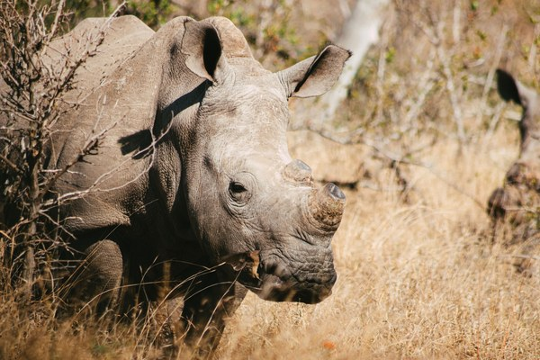
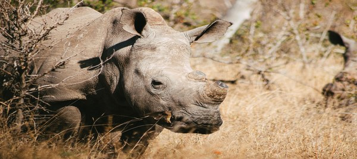
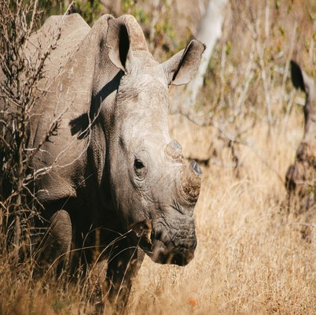
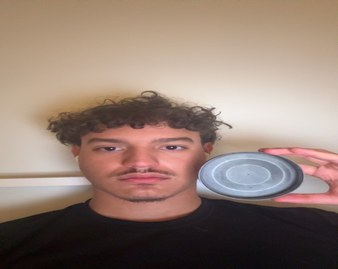

This page shows what happens to a photo on the web as it gets converted, resized and stretched. Each section starts with one original image: a rhino photo from Pexels and a photo I took myself of a perfectly round object. Every article below takes that original and changes one thing, such as its file format, its color, how the browser sizes it, or its proportions, so you can compare file sizes and see when an image looks right and when it looks wrong.
Demonstrating Image Manipulation with a White Rhino Photo from Pexels.com
I picked this close-up of a white rhino in the South African bush because a rhino is my Ambitious Rhino mascot, and the cracked skin, dry grass and thin branches give it plenty of fine detail to lose when the image gets squeezed or shrunk. It was taken by Chané Bruwer, a photographer whose Pexels portfolio is mostly wildlife from Kruger National Park in South Africa and mountain goats on Mount Evans in Colorado. I downloaded the original from Pexels as a JPG that is 6000 by 4000 pixels and 3.49 MB.
Image A1: Original Image
Click to open the image in its original (JPG) format, or one of its converted copies. Each one opens in a new tab at full size.
The full 6000×4000 original, scaled down by the browser so it fits the page.
Image A2: Downsizing Images with CSS
This is the same 6000×4000 file, but inline CSS sets only its width to 600 pixels (about 10% of the original) and lets the browser work out the height, so the proportions stay the same. The browser still has to download all 3.49 MB first.
The original shrunk to 600×400 with inline CSS. It looks right but is still a 3.49 MB download.
Image A3: Proper Reduction of Image with Editor
Here I resized the original in an image editor to 600×400 and saved it as a new file, so the browser only downloads 80 KB instead of 3.49 MB.

Resized in an editor to 600×400 (80 KB), with the proportions kept.
Image A4: Improper Image Proportions with CSS
Starting from the 600×400 copy, I kept one dimension and cut the other by 33%, then did it again. The first two are squashed too far one way and the last two are squeezed too far the other way.

600×268: height cut by 33%, so it looks squashed flat.600×180: height cut by another 33%, so it's squashed even more.

402×400: width cut by 33%, so it looks squeezed thin.269×400: width cut by another 33%, so it's squeezed even more.
Image A5: Improper Enlarging with CSS
Both images below get the same inline CSS width. The left one is the 600×400 copy and the right one is a 150×100 copy (25% of it), so the browser has to blow the small one back up and it turns blurry.
The 600×400 copy (80 KB), shown with the same CSS width.The 150×100 copy (7 KB) stretched to the same width.
Demonstrating Image Proportions with My Own Photo of a Round Lid
I took this selfie with my phone, holding a round gray plastic lid up beside my face. A lid is a perfect circle, so it makes any stretching easy to spot, and my face gives a second shape you would notice looking wrong. This copy came off my phone as a JPG that is 720 by 1280 pixels and 116 KB, which is already much smaller than the phone's full-resolution original.
Image B1: Original Image
Click to open the image in its original (JPG) format, or one of its converted copies. Each one opens in a new tab at full size.
The full 720×1280 original, scaled down by the browser so it fits the page.
Image B2: Downsizing Images with CSS
This is the same 720×1280 file, but inline CSS sets only its width to 288 pixels (about 40% of the original) and lets the browser work out the height, so the proportions stay the same. The browser still has to download all 116 KB first.
The original shrunk to 288×512 with inline CSS. It looks right but is still a 116 KB download.
Image B3: Proper Reduction of Image with Editor
Here I resized the original in an image editor to 338×600 and saved it as a new file, so the browser only downloads 23 KB instead of 116 KB.
Resized in an editor to 338×600 (23 KB), with the proportions kept.
Image B4: Improper Image Proportions with CSS
Starting from the 338×600 copy, I kept one dimension and cut the other by 33%, then did it again. The first two are squashed too far one way and the last two are squeezed too far the other way.
338×402: height cut by 33%, so it looks squashed flat.

338×269: height cut by another 33%, so it's squashed even more.226×600: width cut by 33%, so it looks squeezed thin.151×600: width cut by another 33%, so it's squeezed even more.
Image B5: Improper Enlarging with CSS
Both images below get the same inline CSS width. The left one is the 338×600 copy and the right one is a 84×150 copy (25% of it), so the browser has to blow the small one back up and it turns blurry.
The 338×600 copy (23 KB), shown with the same CSS width.The 84×150 copy (3 KB) stretched to the same width.